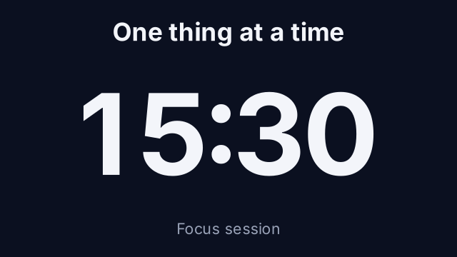
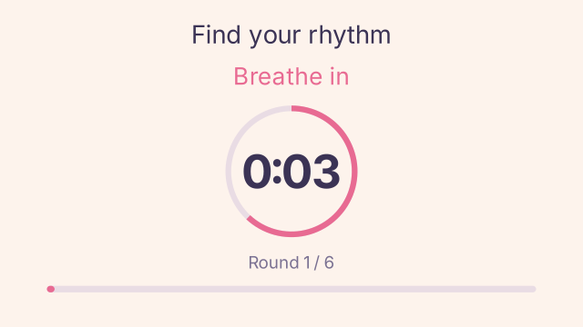
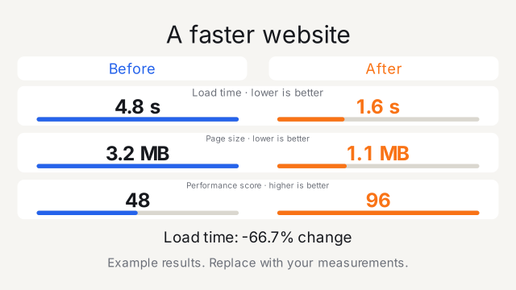
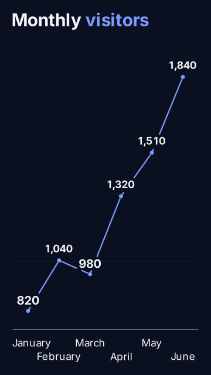
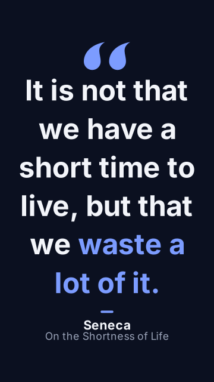
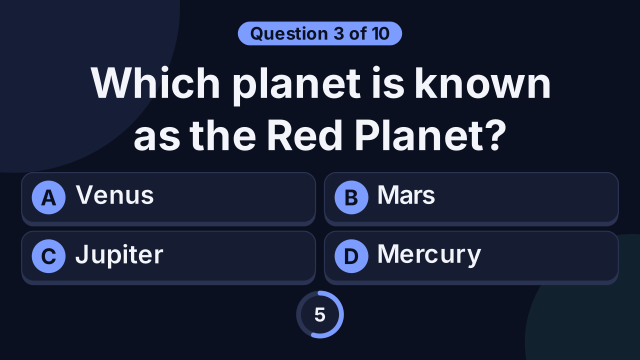

Deep focus
A countdown for focus sessions.
Manim Studio / Video templates
Create a video by editing the text, images, and colors in a ready-made design.
Template gallery
Examples from Studio. Open a design in the app to edit it.

A countdown for focus sessions.

Timed intervals for a breathing session.

Compare two results side by side.

Turn your numbers into an animated chart.

Style a quote with your fonts and colors.

Show a question, give time to think, and reveal the answer.
Also included: announcements, celebrations, animated counters, and year-in-review templates.
How it works
Choose a countdown, comparison, quote, chart, quiz, or another ready-made design.
Change the text, colors, fonts, and images. Preview a still, storyboard, or animation.
Save MP4, GIF, WebM, MOV, or PNG in landscape, vertical, square, or portrait formats.